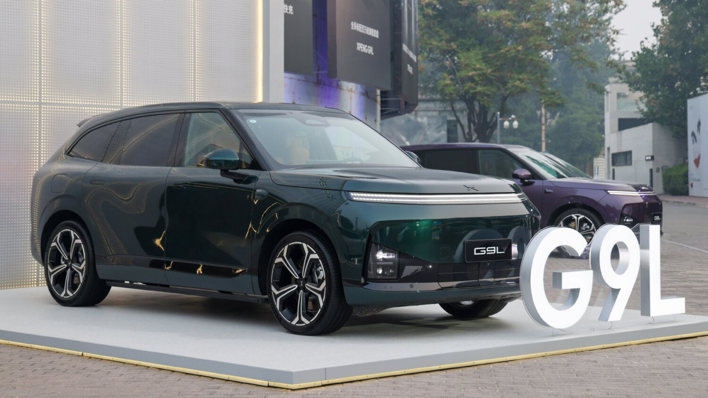

for DC Advanced UX Team.Vivi · Yohan · Libby · Lim Jisu · Katey · Anna
Latest News

Cockpit
Xpeng G9L: an 88-inch AR-HUD heads to Paris
Xpeng will give the G9L its global debut at the Paris Motor Show on October 12, with European production planned at Magna Steyr in Austria. The 5,120 mm SUV is five seats only, built around an 88-inch AR-HUD, a thin LCD cluster, a large centre touchscreen, a 21.4-inch ceiling screen for the rear and a 9-inch streaming mirror; Huawei headlamps can project a 98-inch image onto the road. Four cabin colourways, 33 speakers, a 12.5-litre fridge and three Turing chips at 2,250 TOPS complete the brief. In China it costs 241,800 to 319,800 yuan.
샤오펑 G9L이 10월 12일 파리 모터쇼에서 글로벌 데뷔하며, 유럽 생산은 오스트리아 마그나 슈타이어에서 계획돼 있다. 길이 5,120mm의 이 SUV는 5인승만 나온다. 캐빈은 88인치 AR-HUD와 얇은 LCD 클러스터, 대형 센터 터치스크린, 뒷좌석용 21.4인치 천장 스크린, 9인치 스트리밍 미러로 구성되고 화웨이 헤드램프는 도로에 98인치 영상을 투사한다. 실내 색상 4종, 스피커 33개, 12.5L 냉장고, 튜링 칩 3개(2,250 TOPS)를 갖췄다. 중국 가격은 24만1,800~31만9,800위안이다.
Lapis One: a $499 desk box that only runs AI agents
Pamir AI's Lapis One is a coaster-sized Linux computer built to host AI agents so they stop living inside your laptop. It runs a Rockchip RK3576 with a 6 TOPS NPU, 8 GB of LPDDR5 and 64 GB of storage, expandable via M.2 and microSD, with a 3,300 mAh battery good for about four hours. Four USB-C ports include an Agent KVM that lets the agent drive a second computer's keyboard and mouse; Tailscale handles remote access. The orange wedge with a low-power Sharp memory LCD and pixel-art UI reads like a Rabbit R1 that grew up: $499 on pre-order, $599 later, shipping in December.
파미르 AI의 라피스 원은 AI 에이전트만 돌리기 위해 만든 코스터 크기의 리눅스 컴퓨터다. 6 TOPS NPU를 갖춘 록칩 RK3576, 8GB LPDDR5, 64GB 저장공간(M.2와 microSD로 확장)을 쓰고 3,300mAh 배터리로 약 4시간 작동한다. USB-C 포트 4개 중 하나는 에이전트 KVM으로, 에이전트가 다른 컴퓨터의 키보드와 마우스를 조작할 수 있다. 원격 접속은 테일스케일이 맡는다. 주황색 쐐기형 본체에 샤프의 저전력 메모리 LCD와 픽셀아트 UI를 얹어 래빗 R1의 성장판처럼 보인다. 예약가 499달러, 정가 599달러, 12월 출하.
September's type drop: Exemplar, 32 years in the making
Creative Boom's September round-up gathers 15 new releases. Göran Söderström's Exemplar (Letters from Sweden) closes a project begun in 1994: five weights with italics covering 370 languages across Latin, Cyrillic, Greek and Arabic. Production Type's Peignot Jumbo rounds off Cassandre's 1937 classic for poster scale; Foundry Kingdom revives a 19th-century grotesque in 14 styles named after Brunel; Vieno pairs Bodoni discipline with 15 weights and a mono; GRX from The Designers Foundry ships 40 styles in four sub-families. Sofia Mohr's Autêntica Serif borrows from Brazilian Brutalism.
크리에이티브 붐의 9월 서체 결산에 신작 15종이 모였다. 요란 쇠데르스트룀의 Exemplar(Letters from Sweden)는 1994년에 시작한 작업을 마무리한 것으로, 이탤릭을 포함한 5개 굵기가 라틴·키릴·그리스·아랍 문자 370개 언어를 지원한다. 프로덕션 타입은 카상드르의 1937년작 Peignot를 포스터용으로 둥글린 Jumbo를 냈고, Foundry Kingdom은 브루넬의 이름을 딴 19세기 그로테스크를 14종으로 되살렸다. Vieno는 보도니 골격에 15개 굵기와 모노스페이스를, The Designers Foundry의 GRX는 4개 하위 패밀리 40종을 한꺼번에 내놨다. 소피아 모어의 Autêntica Serif는 브라질 브루탈리즘에서 왔다.
Night City was built by hand, one advert at a time
CD Projekt Red's Jakub Knapik and Kacper Niepokólczycki tell 80 Level how Cyberpunk 2077's city was assembled almost entirely by artists: every building, advert, trash container and piece of paper was placed by hand, and procedural tools were tested and rejected except for a road tool that only gave starting points. Four chronological visual styles (80s entropy, 60s kitsch, corporate neomilitarism, neo-kitsch luxury) enforce a 'rule of contrast' between districts. Texel density doubled over The Witcher 3, first-person forced a rethink of scale, and path tracing grew naturally from a physically based lighting base.
CD Projekt Red的Jakub Knapik与Kacper Niepokólczycki向80 Level讲述《赛博朋克2077》的夜之城如何几乎全靠美术手工搭建：每栋建筑、每张广告、每个垃圾桶乃至每张纸片都由人摆放，程序化工具试过即弃，只留一个提供起点的道路工具。四种按年代排列的视觉风格（80年代熵变、60年代媚俗、企业新军国主义、新媚俗奢华）用“对比法则”区分各区。贴图密度比《巫师3》翻倍，第一人称视角迫使重定比例，路径追踪则从物理光照基础自然生长而来。
CD 프로젝트 레드의 야쿠프 크나피크와 카츠페르 니에포쿨치츠키가 80 Level에 사이버펑크 2077의 나이트 시티가 거의 전부 손으로 지어졌다고 밝혔다. 건물과 광고, 쓰레기통, 종이 한 장까지 아티스트가 직접 배치했고, 절차적 도구는 시험 후 버렸으며 출발점만 주는 도로 도구만 남았다. 80년대 엔트로피, 60년대 키치, 기업 신군국주의, 네오키치 럭셔리라는 네 가지 시대 스타일이 구역 간 '대비의 규칙'을 만든다. 텍셀 밀도는 위처 3의 두 배, 1인칭 시점은 스케일을 다시 짜게 했고, 패스 트레이싱은 물리 기반 조명 위에서 자연스럽게 자랐다.
BMW iX3: Panoramic Vision reaches US driveways early
BMW started US deliveries of the 2027 iX3 50 xDrive on September 16, nine days ahead of plan, after more than 100,000 orders worldwide pushed the Debrecen plant onto a third shift; the 50,000th car left the line at the end of July. American buyers now get the Neue Klasse cockpit first shown last year: a 43-inch Panoramic Vision strip along the base of the windscreen in place of a conventional cluster, and a 17.9-inch central display running Panoramic iDrive. From $61,500, with an EPA range of 434 miles and 400 kW charging that adds 231 miles in about ten minutes.
BMW가 2027년형 iX3 50 xDrive의 미국 인도를 계획보다 9일 이른 9월 16일에 시작했다. 전 세계 주문이 10만 대를 넘겨 데브레첸 공장은 3교대로 늘렸고, 5만 번째 차는 7월 말에 생산됐다. 미국 구매자는 지난해 처음 공개된 노이에 클라세 콕핏을 받는다. 윈드실드 아래를 가로지르는 43인치 파노라믹 비전이 기존 계기판을 대신하고, 17.9인치 센터 디스플레이가 파노라믹 iDrive를 돌린다. 시작가 6만1,500달러, EPA 주행거리 434마일, 400kW 충전으로 약 10분에 231마일을 더한다.
Aarke: 'minimalism feels cold when empty of narrative'
designboom interviews Malin Gäfvert, creative director of Aarke, the Stockholm appliance brand founded in 2013 by industrial designers Carl Ljungh and Jonas Groth. Her rule for the identity is that minimalism only reads cold when it has no story, so the brand pairs precise product photography of steel and materiality with lifestyle images shot on analogue film in ambient light. The core, called Everyday Engineering, never chases trends, while seasonal content adapts around it; packaging, unboxing and retail follow one standard. The goal is to move a carbonator from the cupboard to the countertop as an object people want seen.
디자인붐이 아르케의 크리에이티브 디렉터 말린 예베르트를 인터뷰했다. 아르케는 산업 디자이너 칼 융과 요나스 그로트가 2013년 스톡홀름에서 세운 주방가전 브랜드다. 그의 원칙은 미니멀리즘이 차갑게 느껴지는 건 이야기가 비어 있을 때뿐이라는 것이다. 그래서 강철의 질감을 살린 정밀한 제품 사진 옆에 필름과 자연광으로 찍은 생활 장면을 나란히 둔다. '에브리데이 엔지니어링'이라는 핵심은 유행을 좇지 않고 시즌 콘텐츠만 그 주변에서 움직이며, 패키지와 언박싱, 매장까지 한 기준을 따른다. 목표는 탄산수 제조기를 찬장에서 조리대 위로, 보여주고 싶은 물건으로 옮기는 것이다.
Ducati Desmo450 SM: a 109 kg supermoto with fall detection
Ducati's first racing supermoto is a Desmo450 MX reworked for asphalt: 449.6 cc desmodromic single, 63.5 hp at 9,400 rpm, quickshifter and Suter slipper clutch, on 16.5-inch front and 17-inch rear Excel rims with Metzeler slicks. Showa suspension gives 280 and 295 mm of travel, a Brembo Stylema caliper bites a 310 mm Galfer disc, and wet weight without fuel is 109 kg. Electronics cover launch control, engine-brake and supermoto-tuned traction control, predictive maintenance, Ducati Fall Detection and an optional Wi-Fi module with the X-Link app; an hour-meter calls piston checks at 45 hours. €13,990 in Italy, Europe from December.
iCaur V27 Long-Range: DeepSeek voice in a boxy EREV
Chery's iCaur V27 adds a Long-Range edition on September 30, as monthly deliveries have slid from 4,184 in April to 1,609 in August. The boxy 4,909 mm SUV (5,055 mm with the tailgate spare) keeps its floating centre touchscreen on a Snapdragon 8295P with 30 TOPS for a DeepSeek-based voice assistant, alongside Apple CarPlay, Huawei HiCar and CarLink. The 34.3 kWh LFP pack now gives 210 km of CLTC electric range and 1,230 km combined behind a 1.5 T range extender; rear-drive makes 185 kW, dual-motor 335 kW. Current trims run 169,800 to 196,800 yuan.
체리 iCaur V27이 9월 30일 롱레인지 버전을 내놓는다. 월 인도량은 4월 4,184대에서 8월 1,609대로 줄어든 상태다. 길이 4,909mm(테일게이트 스페어 포함 5,055mm)의 각진 SUV는 플로팅 센터 터치스크린을 유지하며, 30 TOPS의 스냅드래곤 8295P가 딥시크 기반 음성 비서를 돌리고 애플 카플레이, 화웨이 하이카, 카링크를 지원한다. 34.3kWh LFP 배터리로 CLTC 전기 주행 210km, 1.5T 레인지 익스텐더와 합쳐 1,230km를 간다. 후륜 185kW, 듀얼 모터 335kW다. 현행 트림은 16만9,800~19만6,800위안이다.
Porsche has put inductive charging into production on the Cayenne Electric: a pad in the car's underbody couples with a weatherproof ground plate in the owner's parking space, delivering up to 11 kW at about 90 percent efficiency. The driver's only task is to park over the plate; there is no cable, no plug and nothing to remember at night. Motion sensors and foreign-object detection pause charging if a person or animal approaches the car or the pad. Orders are open in Germany and other European markets, with a staged global rollout to follow; pricing was not disclosed.
포르쉐가 무선(유도) 충전을 양산에 올렸다. 첫 적용은 카이엔 일렉트릭으로, 차체 바닥의 충전판이 주차 공간의 방수 지면판과 결합해 최대 11kW를 약 90% 효율로 전달한다. 운전자가 할 일은 판 위에 주차하는 것뿐이며 케이블도 플러그도 없다. 모션 센서와 이물질 감지가 사람이나 동물이 차나 판에 다가오면 충전을 멈춘다. 독일과 유럽 시장에서 주문을 받기 시작했고 이후 단계적으로 전 세계에 나온다. 가격은 밝히지 않았다.
JKR has refreshed Tropical Smoothie Cafe with a new shorthand mark, the Palm T, a T drawn from palm-tree forms that can stand alone on cups and signage. The palette settles on Palm Frond Green and Sunset Orange, backed by expressive illustration, motion elements and sun-lit photography. The system rolls out over cups, bento boxes, paper bags, trays, blade signs and wildposting. Executive creative director JB Hartford frames 'tropical' as a feeling rather than a place: warm, relaxed and full of energy, what guests 'feel before you can name it' when they walk in.
JKR이 트로피컬 스무디 카페의 브랜드를 새로 다듬었다. 핵심은 야자수 형태로 그린 T자 심벌 '팜 T'로, 컵과 간판에 단독으로 쓸 수 있다. 색은 팜 프론드 그린과 선셋 오렌지로 정리했고, 표현력 있는 일러스트와 모션 요소, 햇빛 가득한 사진이 받친다. 시스템은 컵, 도시락 상자, 종이봉투, 트레이, 돌출 간판, 거리 포스터까지 이어진다. 총괄 크리에이티브 디렉터 JB 하트퍼드는 '트로피컬'을 장소가 아니라 감정으로 정의했다. 따뜻하고 느긋하며 에너지가 넘치는, 손님이 들어서며 '이름 붙이기 전에 먼저 느끼는 것'이다.
Argentine indie developer Sebastián Gioseffi releases Video Game Menu: The Game on Steam today, September 21: a 20 to 30 minute experience that is nothing but menus. Buttons, toggles, sliders and input fields start as an ordinary options screen and slide into what he calls a surreal nightmare of impossible settings, more than 70 of them, with absurd difficulty choices, UI wordplay and a long aside on the Roman Empire. It is a joke with a point about how much of a game's interface design players actually feel, in English and Spanish, from a one-person studio.
阿根廷独立开发者Sebastián Gioseffi的《Video Game Menu: The Game》今日（9月21日）登陆Steam：20到30分钟的体验，内容只有菜单。按钮、开关、滑块和输入框从一张普通的设置页面开始，逐渐滑向他所说的“不可能设定的超现实噩梦”——70多项设置、荒诞的难度选项、UI文字游戏，还有一段关于罗马帝国的长篇旁白。这是个有观点的玩笑：玩家究竟对游戏界面设计感受到多少。支持英语和西班牙语，一人工作室出品。
아르헨티나 인디 개발자 세바스티안 지오세피의 'Video Game Menu: The Game'이 오늘 9월 21일 스팀에 나온다. 20~30분짜리 이 게임은 메뉴만으로 이뤄져 있다. 버튼과 토글, 슬라이더, 입력창이 평범한 옵션 화면으로 시작해 그가 말하는 '불가능한 설정들의 초현실적 악몽'으로 미끄러진다. 설정 항목 70개 이상, 터무니없는 난이도 선택지, UI 말장난, 로마 제국에 관한 긴 여담까지 들어 있다. 플레이어가 게임 인터페이스 디자인을 실제로 얼마나 느끼는지 묻는, 뼈 있는 농담이다. 영어와 스페인어를 지원하며 1인 스튜디오 작품이다.
MATE: a sticky note that sets its own alarm when you write
Geonwoo Kang's MATE is an e-ink notepad concept that reads what you write. Jot 'meeting at 1:00 p.m.' with the built-in stylus and on-device handwriting recognition picks out the time and quietly schedules an alert, no app, no menu. A thin LED bar along the top edge counts down the time left; a three-stage physical slider flicks between up to three saved notes; the pad detaches on magnets to sit on a fridge or wall, and the pen nests in a groove. It is the same instinct as Verso's phone-back notepad: take a routine task off the phone and give it one honest surface.
강건우의 MATE는 쓴 글을 읽는 전자잉크 메모장 콘셉트다. 내장 스타일러스로 '오후 1시 회의'라고 적으면 기기 내 필기 인식이 시간을 골라내 조용히 알림을 잡는다. 앱도 메뉴도 필요 없다. 위쪽 가장자리의 얇은 LED 바가 남은 시간을 카운트다운하고, 3단 물리 슬라이더로 최대 3개의 메모를 넘긴다. 메모판은 자석으로 떼어 냉장고나 벽에 붙이고 펜은 홈에 꽂는다. 폰 뒷면에 붙는 Verso 메모장과 같은 발상으로, 일상 작업 하나를 폰에서 떼어내 정직한 표면 하나에 맡긴다.
Ninja H2 returns to Europe at 206 hp, with a new dash
Kawasaki Europe has announced the 2027 Ninja H2, back after five years away and re-engineered for Euro5+. The supercharged 998 cc four now makes 206 hp at 11,000 rpm with ram air, down from 240, with new throttle bodies, pistons, head, crank, cams and impeller and a longer, narrower silencer; Brembo Hypure calipers replace the Stylemas, while the KYB fork and Öhlins TTX36 shock stay. A new display offers two selectable modes. Styling is unchanged: Mirror Coated Spark Black over a green trellis frame, with a carbon upper fairing on the H2 Carbon. The track-only H2R keeps its 306-plus hp; a US announcement is expected.
가와사키 유럽이 2027년형 닌자 H2를 발표했다. 5년 만의 복귀로 Euro5+에 맞춰 손봤다. 998cc 슈퍼차저 4기통은 램에어 기준 11,000rpm에서 206마력을 내며 이전 240마력에서 줄었다. 스로틀 보디와 피스톤, 헤드, 크랭크, 캠, 임펠러를 바꾸고 소음기는 더 길고 가늘어졌다. 브렘보 하이퓨어 캘리퍼가 스틸레마를 대체하고 KYB 포크와 올린즈 TTX36 쇽은 남았다. 새 계기판은 두 가지 모드를 고를 수 있다. 외관은 그대로다. 미러 코팅 스파크 블랙에 녹색 트렐리스 프레임, H2 카본은 탄소섬유 상단 페어링을 쓴다. 트랙 전용 H2R은 306마력 이상을 유지하고, 미국 발표도 곧 있을 예정이다.
auruBOROS: a 30 m gold serpent under the High Line
Plastique Fantastique's auruBOROS, commissioned for Bvlgari's Serpenti Infinito series, ran September 10 to 20 beneath The Standard on New York's High Line. The 30 by 10 by 10 metre pneumatic sculpture is made of golden mirrored TPU membranes held up by ventilators, an ouroboros that opens its loop and stretches into the street like a temporary organism. The mirror skin takes on daylight, buildings, plants and sky, so the piece flips between a solid object and a reflection of its surroundings; Marco Canevacci and Yena Young call the shared, ten-day encounter 'Public Love'.
플라스티크 판타스티크가 불가리의 세르펜티 인피니토 아트 시리즈를 위해 만든 auruBOROS가 9월 10일부터 20일까지 뉴욕 하이라인의 더 스탠더드 호텔 아래에 섰다. 30×10×10m의 공기막 조각은 금빛 거울 TPU 막을 송풍기로 세운 것으로, 꼬리를 문 고리를 열고 거리로 몸을 뻗은 우로보로스가 도시를 지나는 임시 생명체처럼 보인다. 거울 표면이 햇빛과 건물, 식물, 하늘을 받아들여 작품은 단단한 물체와 주변의 반사 사이를 오간다. 마르코 카네바치와 영예나는 이 열흘의 공유된 만남을 '퍼블릭 러브'라 부른다.
Issey Miyake dresses dancers in Matisse's The Snail
Homme Plissé Issey Miyake staged its second Open Studio on September 16 in Tate Modern's South Tank, translating Henri Matisse's 1953 cut-out The Snail into pleated garments and choreography. Dresden Frankfurt Dance Company performed Ioannis Mandafounis's One One One format, improvised one-to-one encounters held by eye contact, in a circular layout that seated the audience inside the action. The cut-out shapes were hidden under a pale felt floor and revealed piece by piece as the dancers dressed; at the end every garment was gathered back into a floor-level reconstruction of the painting.
Homme Plissé Issey Miyake于9月16日在泰特现代美术馆South Tank举办第二届Open Studio，把马蒂斯1953年剪纸作品《蜗牛》转译为褶皱服装与编舞。德累斯顿法兰克福舞团演绎Ioannis Mandafounis的“One One One”形式：舞者与观众一对一即兴相遇，以眼神维系；环形布局让观众置身表演之中。剪纸形状先藏在浅色毛毡地面下，随舞者逐件穿上而显现；结尾所有服装被收回，在地面上重新拼成那幅画。
옴므 플리세 이세이 미야케가 9월 16일 테이트 모던 사우스 탱크에서 두 번째 오픈 스튜디오를 열고 앙리 마티스의 1953년 컷아웃 '달팽이'를 주름 의상과 안무로 옮겼다. 드레스덴 프랑크푸르트 댄스 컴퍼니가 요아니스 만다푸니스의 '원 원 원' 형식으로, 눈맞춤으로 이어지는 일대일 즉흥 만남을 펼쳤고 원형 배치가 관객을 무대 안에 앉혔다. 컷아웃 형태들은 연한 펠트 바닥 아래 숨겨졌다가 무용수가 하나씩 입으며 드러났고, 마지막엔 모든 옷을 다시 모아 바닥 위에 그림을 재구성했다.
Sondors' forgotten three-wheeler is on eBay for $10,000
The three-wheeled electric car SONDORS showed at the 2017 Los Angeles Auto Show has surfaced on eBay: one mile on the clock, non-functional, sold as-is and not street legal, asking $10,000 or best offer, the exact price the e-bike maker once promised for production. The white prototype, reportedly more than $1.5 million in development, seats three with a single rear seat on the centreline and was pitched with 75, 150 or 200 miles of range and 0 to 60 mph in five to eight seconds. It never reached production; Sondors went back to e-bikes and the Metacycle before entering bankruptcy.
SONDORS가 2017년 LA 오토쇼에서 선보인 3륜 전기차가 이베이에 올라왔다. 주행거리 1마일, 작동 불가, 현 상태 그대로 판매, 도로 주행 불가 조건에 호가는 1만 달러(협상 가능)다. 전기자전거 회사였던 이들이 양산가로 약속했던 바로 그 금액이다. 흰색 프로토타입은 개발비 150만 달러 이상이 들었다고 전해지며, 뒷줄 가운데 한 자리를 둔 3인승에 75·150·200마일 주행거리와 0-60mph 5~8초를 내세웠다. 양산은 없었고 SONDORS는 전기자전거와 메타사이클로 돌아갔다가 파산 절차에 들어갔다.